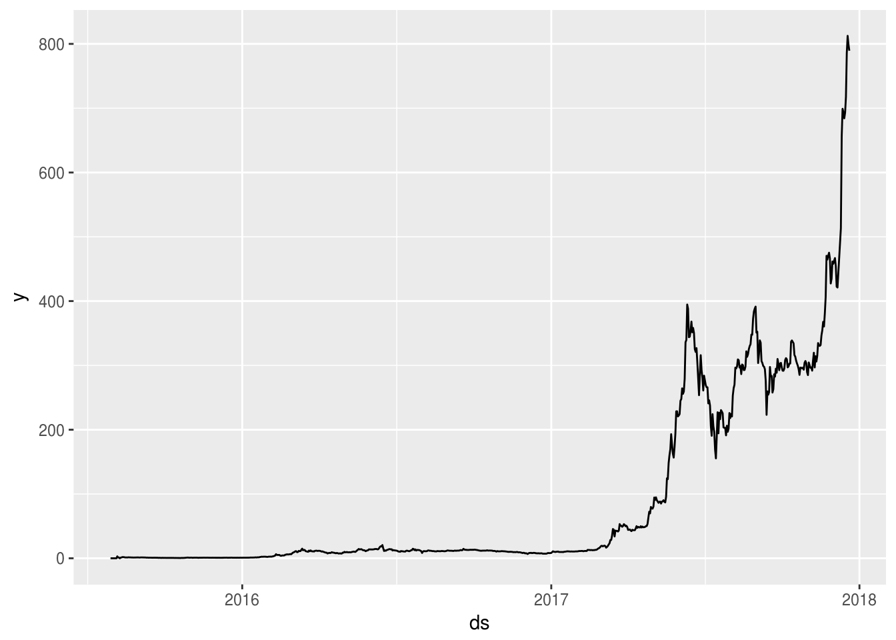
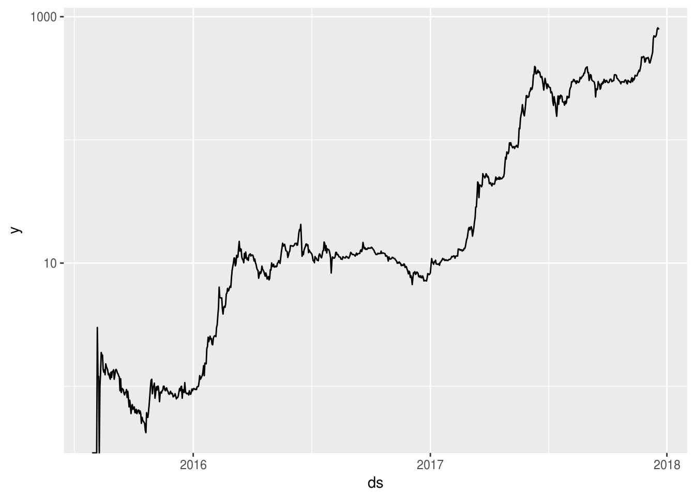
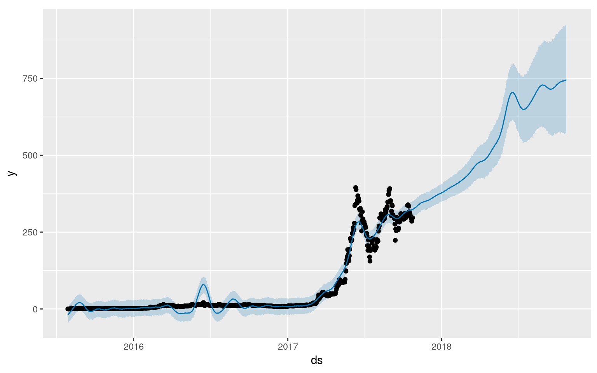
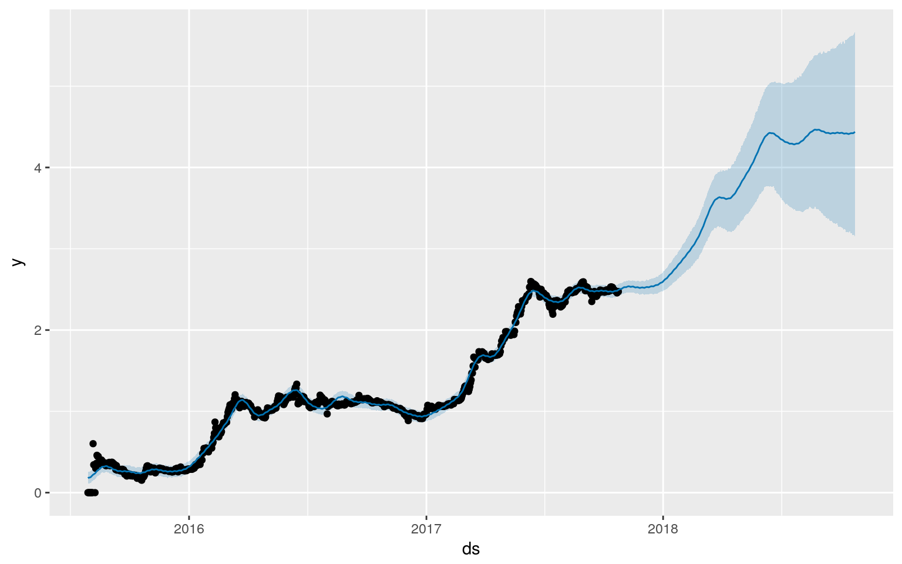

source("infobox.R")
infobox(list(
"Status" = "Incomplete",
"Last Revision" = file.info("EthereumPricePrediction.Rmd")$mtime,
"Epistemic Status" = "Highly Speculative",
"Content Warning" = "This is not investment advice. I have no idea what I'm doing."
))| Status | Incomplete |
| Last Revision | 2017-12-15 13:57:25 |
| Epistemic Status | Highly Speculative |
| Content Warning | This is not investment advice. I have no idea what I'm doing. |
Cryptocurrencies have been doing rather well recently.
library('tidyverse')
library('anytime')
download.file('https://etherscan.io/chart/etherprice?output=csv', '../data-cache/ethereum.csv')
prices <- read_csv('../data-cache/ethereum.csv') %>%
transmute(
ds = anydate(`UnixTimeStamp`),
y = Value
)## Parsed with column specification:
## cols(
## `Date(UTC)` = col_character(),
## UnixTimeStamp = col_integer(),
## Value = col_double()
## )ggplot(prices, aes(x = ds, y = y)) + geom_line()
Nice Exponential growth recently! Let’s log-scale that:
ggplot(prices, aes(x = ds, y = y)) + geom_line() + scale_y_log10()## Warning: Transformation introduced infinite values in continuous y-axis
Cool! Now, let’s consult Facebook’s Prophet to see if it predicts a long-term trend.
library('prophet')
m <- prophet(prices)## Disabling daily seasonality. Run prophet with daily.seasonality=TRUE to override this.## Initial log joint probability = -81.8856
## Optimization terminated normally:
## Convergence detected: relative gradient magnitude is below tolerancefuture <- make_future_dataframe(m, periods = 365)
forecast <- predict(m, future)
plot(m, forecast)
Short answer, “yes.” However, it’s pretty obviously a lousy forecast. Prophet probably doesn’t pick up exponential trends. We might’ve been able to guess this based on the fact that the R tutorial uses an exponential trend and log-transforms it before modeling. Let’s do the same!
prices <- prices %>%
mutate(y = log10(y+1))
m <- prophet(prices)## Disabling daily seasonality. Run prophet with daily.seasonality=TRUE to override this.## Initial log joint probability = -7.58767
## Optimization terminated normally:
## Convergence detected: relative gradient magnitude is below tolerancefuture <- make_future_dataframe(m, periods = 365)
forecast <- predict(m, future)
plot(m, forecast)
Wow, that’s much better! Based on this, the obvious long term strategy is to buy and hold (remember, that y-axis is the log base 10, so 4 really means $10,000). But is there any reason to believe we could do better?
This strategy should sound like it’s a stark contrast to the conventional wisdom of “Buy low, sell High.” However, it’s slightly more nuanced than that. The general assumption is that down days will tend to follow down days, and likewise with up days. First, is this actually true?
prices %>%
mutate(
yesterday = dplyr::lag(y),
dayBefore = dplyr::lag(y, n = 2)
) %>%
filter(!is.na(dayBefore)) %>%
mutate(buy = ifelse(yesterday > dayBefore, 1, -1))## # A tibble: 870 x 5
## ds y yesterday dayBefore buy
## <date> <dbl> <dbl> <dbl> <dbl>
## 1 2015-07-31 0.0000000 0.0000000 0.0000000 -1
## 2 2015-08-01 0.0000000 0.0000000 0.0000000 -1
## 3 2015-08-02 0.0000000 0.0000000 0.0000000 -1
## 4 2015-08-03 0.0000000 0.0000000 0.0000000 -1
## 5 2015-08-04 0.0000000 0.0000000 0.0000000 -1
## 6 2015-08-05 0.0000000 0.0000000 0.0000000 -1
## 7 2015-08-06 0.6020600 0.0000000 0.0000000 -1
## 8 2015-08-07 0.3424227 0.6020600 0.0000000 1
## 9 2015-08-08 0.3424227 0.3424227 0.6020600 -1
## 10 2015-08-09 0.0000000 0.3424227 0.3424227 -1
## # ... with 860 more rowsLet’s fit the model daily, take Prophet’s advice, and see where we end up.
For a simple strategy to start, let’s just buy and sell in increments of $10.
# (Note: If you're replicating this anaylsis, this runs rather slowly since it has to fit ~320 Prophet models.)
predictions <- data.frame(ds=c(), y=c())
for(day in seq(as.Date("2016-07-29"), as.Date("2017-06-14"), "days")){
m <- prices %>% filter(ds < day) %>% prophet()
future <- make_future_dataframe(m, periods = 1)
forecast <- predict(m, future)
predictions <- rbind(predictions, data.frame(ds=anydate(day), y=tail(forecast$yhat, 1)))
}OK, so when should one buy and when should one sell?
orders <- predictions %>%
mutate(prediction = 10^y-1) %>%
select(-y) %>%
left_join(prices) %>%
mutate(price = 10^y-1) %>%
cbind(laggedPrice = lag(.$price)) %>%
filter(!is.na(laggedPrice)) %>%
mutate(
buy = ifelse(prediction > laggedPrice, 1, 0),
etherBoughtToday = 10/price * buy,
etherBalance = cumsum(etherBoughtToday),
cost = 10*cumsum(buy),
etherValue = etherBalance*price,
net = etherValue - cost
)We shouldn’t feel too bad about this. After all, Prophet was only invented in February 2017, so we couldn’t have written a trading bot with it back in July 2016.
In general, the optimal wager size is given by the Kelly Criterion, which can be roughly stated as the ratio of your expected net winnings to the actual winnings if the bet resolves in your favor.